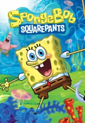

")
Alternativ: SpongeBob SquarePants
 
 IMDB-Wertung: 8.1 / 10
IMDB-Wertung: 8.1 / 10  Metascore:
Metascore: 
Tief unten im pazifischen Ozean, in der Stadt Bikini Bottom, lebt ein quadratischer gelber Schwamm namens SpongeBob Schwammkopf. SpongeBob wohnt zusammen mit seiner miauenden Haustierschnecke Gary in einer Zwei-Zimmer Ananas, liebt seinen Job als Koch im Fast-Food-Lokal „Krosse Krabbe“ und hat ein absolutes Talent dafür ständig in Schwierigkeiten zu geraten – ohne es wirklich darauf anzulegen. Wenn er also nicht gerade Krabbenburger brät oder seinem nörgelndem Nachbarn Thaddäus Tentacles auf die Nerven geht, steckt SpongeBob meistens zusammen mit seinem besten Seestern Freund Patrick oder seiner Freundin, dem Nervenkitzel suchenden, Unterwasser lebendem Eichhörnchen Sandy, mitten in einem schrägen Abenteuer.
Jahr: 1999
Dauer: 8 Minuten
FSK: 6
Land: USA Studio: Nickelodeon NetworkTonspuren:
Untertitel:
Auflösung: SD (640x480) Größe: 94 MB
Genre: Komödie, Fantasy, Animation/Trick, Familie, TV-Serie
Regisseur: Paul Tibbitt, Dave Cunningham, Adam Paloian, Walt Dohrn, Aaron Springer, Keith Lowry, Mark Osborne, Mark Caballero, Seamus Walsh, Sean De Simone, Alan Smart
Drehbuch: Jon Watts
Soundtrack:
Darsteller:
 Tom Kenny als Gary
Tom Kenny als Gary Clancy Brown als Mr. Krabs
Clancy Brown als Mr. Krabs Rodger Bumpass als Squidward
Rodger Bumpass als Squidward Bill Fagerbakke als Patrick Star
Bill Fagerbakke als Patrick Star Dee Bradley Baker als Fish #1
Dee Bradley Baker als Fish #1 Mr. Lawrence als Plankton
Mr. Lawrence als Plankton Jill Talley als Karen
Jill Talley als Karen Carolyn Lawrence als Sandy Cheeks
Carolyn Lawrence als Sandy Cheeks Lori Alan als Pearl Krabs
Lori Alan als Pearl Krabs Thomas F. Wilson als Cop #2
Thomas F. Wilson als Cop #2 Chris Elliott als Captain
Chris Elliott als Captain Edward Asner als Angry Old Timer
Edward Asner als Angry Old TimerDatei: X:\Kinder Collections\SpongeBob Schwammkopf\SpongeBob Schwammkopf S01-S08\S01\SpongeBob Schwammkopf S01E01a.mkv seit 22.05.2017
Festplatte: Kinder-Filme+Trick
 Es gibt insgesamt 23 Filme in der Gruppe 'Kinder Collections\SpongeBob Schwammkopf'
Es gibt insgesamt 23 Filme in der Gruppe 'Kinder Collections\SpongeBob Schwammkopf'